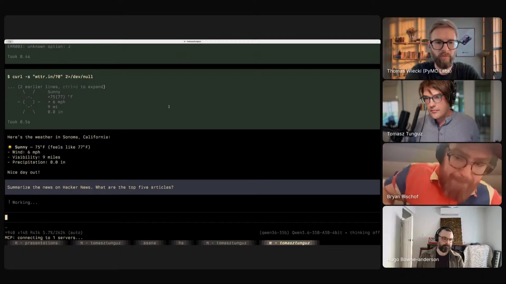
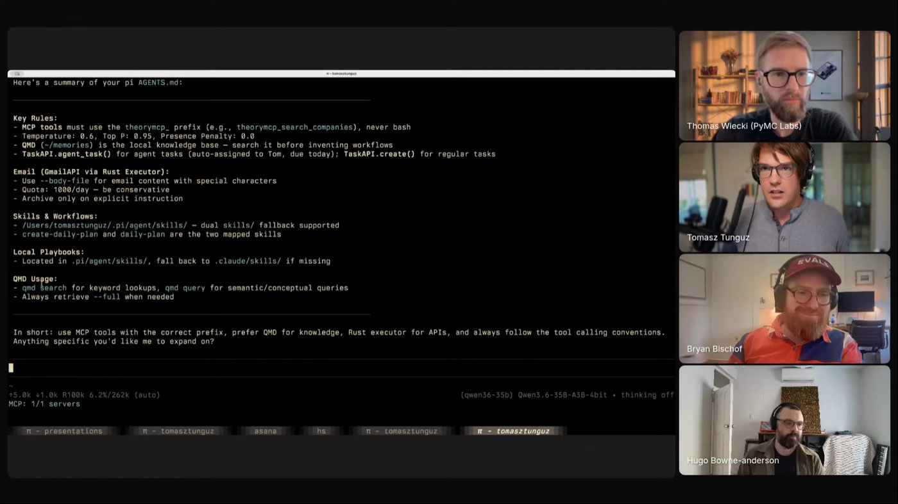
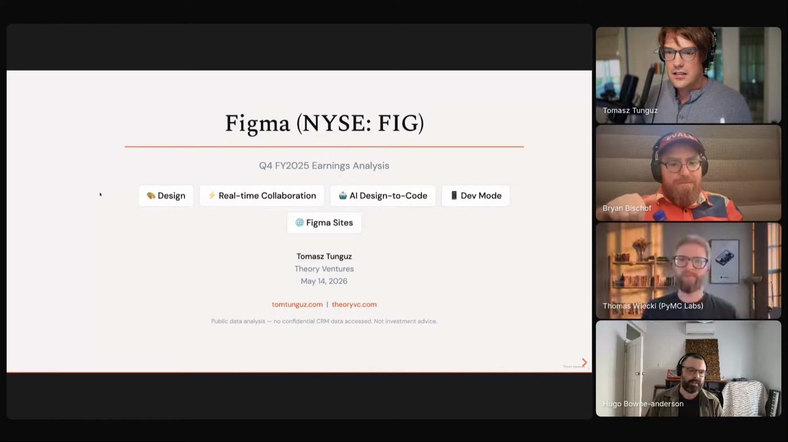

pull the numbers
The skill pulls company CSVs from a data source into a folder, the raw material for the briefing. 02:00:45
 TOMASZ TUNGUZ
THEORY VENTURES
LOCAL-FIRST
STRIPPED TO THE BONE
SILICON MIND
TOMASZ TUNGUZ
THEORY VENTURES
LOCAL-FIRST
STRIPPED TO THE BONE
SILICON MIND
Tom runs agents as parallel local workers. A model on his own laptop, a harness stripped to the bone, skills for the repeatable analysis. He reaches for the cloud only when he can name the reason: a hard multi-file refactor, or a model that's distinctly better at one thing.

"I live in Pi and I run local models." The first guest on the show to run local for the majority of his workflow. On a Mac M5 with Qwen 35B he gets 120 to 140 tokens a second at a 256K context window, fast enough that cloud tools feel slow next to it. He switches to the cloud only when he can name why: a multi-file refactor, or a model with a distinct edge like Kimi K26 for creative writing.
The catch is the harness. A system prompt of 25 to 40 thousand tokens erases the local speed advantage, so Tom keeps everything thin: a tiny AGENTS.md, skills for the repeatable analysis, and not much else. "You can literally strip almost to the bone and it'll still work."
Inside the write-up: eight principles, the session shape, anti-patterns, and the exact hardware and model setup you need.

"The great power of agents is parallelization."

The skill pulls company CSVs from a data source into a folder, the raw material for the briefing. 02:00:45
It locates the earnings call transcript with Exa, so the analysis is grounded in what management actually said. 02:01:12
A series of R libraries render the figures: revenue growth, net dollar retention, cash, guidance, against his own style sheets. 02:01:16
It assembles an HTML deck with charts and quotes, and a launch daemon runs it every morning on whichever companies just reported. 02:03:30

"They demonstrate such a level of intelligence and then they forget."